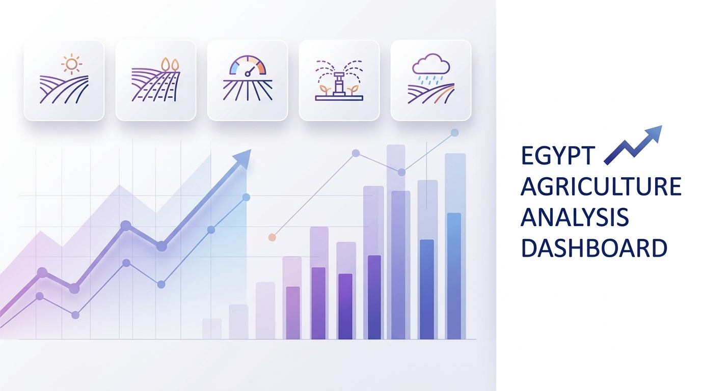
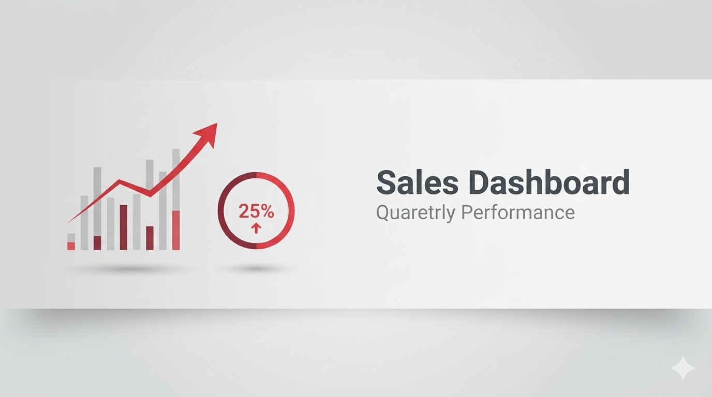
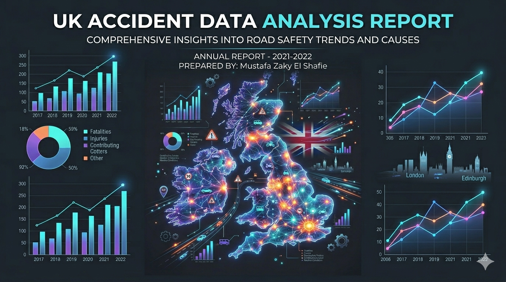
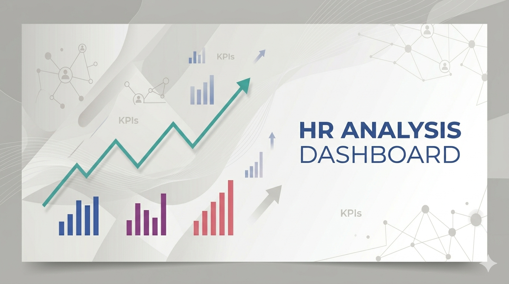
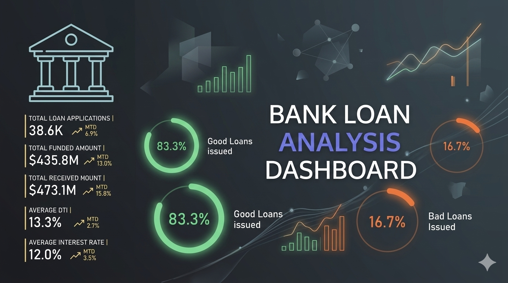

This project provides a comprehensive data-driven analysis of the Egyptian agricultural sector from 2000 to 2023.
By leveraging data visualization, the dashboard tracks production efficiency, land use, and the intersection of environmental sustainability with food security.
The goal is to identify patterns in crop production, irrigation dependency, and climate resilience to support informed decision-making in the AgriTech space.

Employee attrition is not just an HR metric — it is a material financial risk. This dashboard transforms a raw HR dataset into a structured, decision-ready intelligence system that answers the question every leader needs to ask:
"Who is leaving, why are they leaving, and what can we do about it?"

This project features a multi-page Power BI dashboard designed with a modern, minimal aesthetic. It enables stakeholders to monitor key performance indicators (KPIs), track regional trends, and perform advanced time-series analysis on sales data.

This project presents a comprehensive analysis of road accidents in the United Kingdom, utilizing data from 2021 and 2022. The primary objective of this analysis is to identify key trends, contributing factors, and patterns in road accidents, providing insights that can inform road safety initiatives and policy-making.

This project presents a comprehensive HR Analysis Dashboard, which provides a data-driven approach to understanding workforce dynamics, including employee demographics, hiring trends, turnover rates, and leadership diversity.

This project is a comprehensive Bank Loan Analysis Dashboard designed to monitor and assess lending activities. It provides key performance indicators (KPIs) and data-driven insights into loan applications, funding, and repayment health, categorized by "Good" and "Bad" loan statuses.